Lesson 3 · Free Time
Student
New Words
Student Page 3 · Week 3
Look. Listen. Repeat. ★ = most important words.
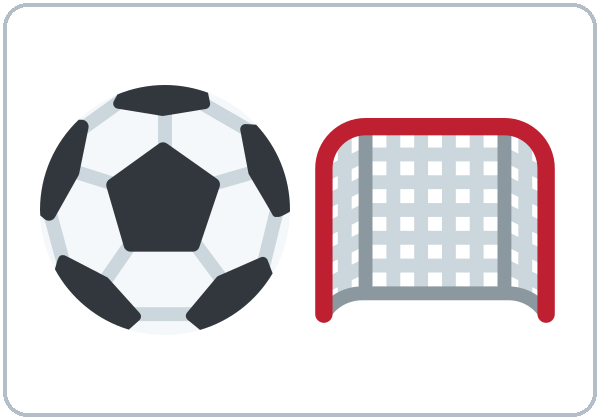
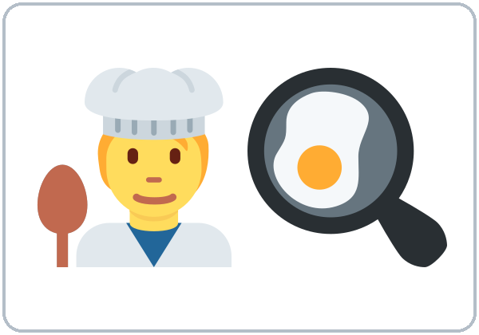
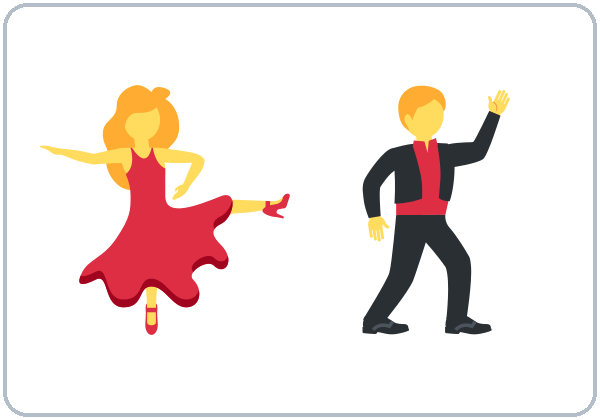
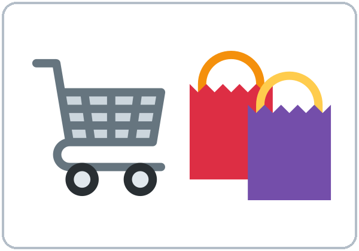
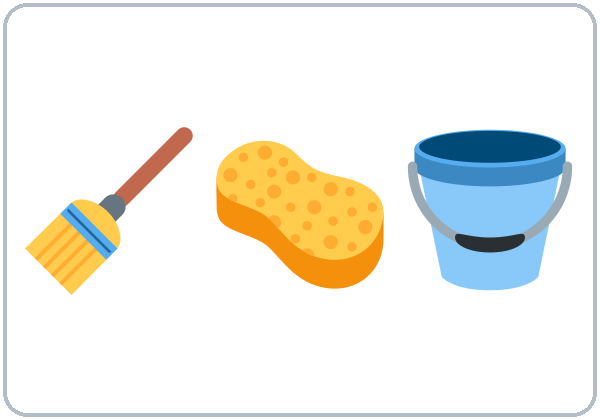
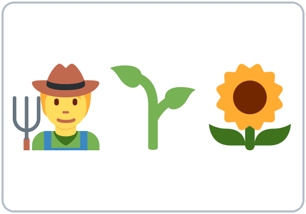
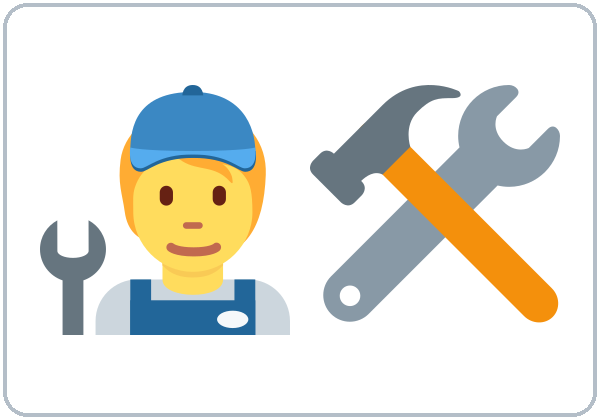
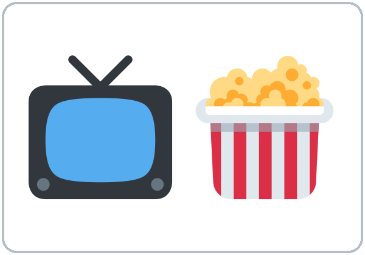
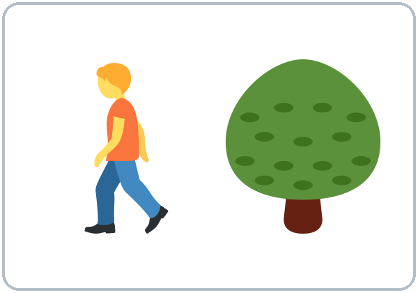
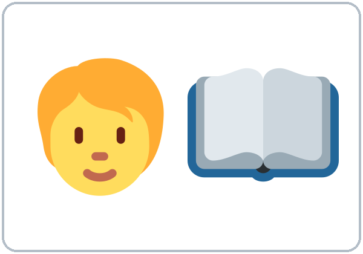
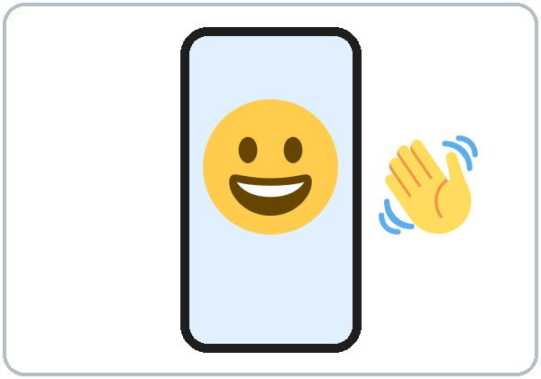
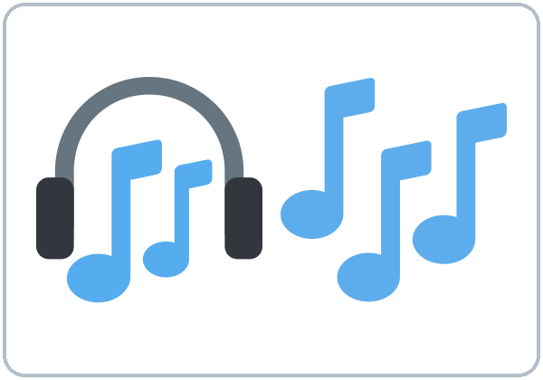
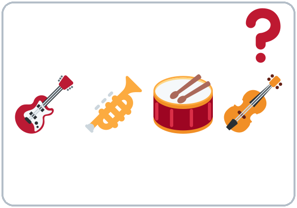
Music examples: salsa, cumbia, pop, rock (no pictures; ask learners for their favorite kinds).
Listening
Listen: the conversation plays twice.
Listen to Kim and Carlos.
A. Listen. ✓ = likes / doesn't mind, ✗ = doesn't like / hates. Some boxes stay empty.
| Kim | Carlos | |
|---|---|---|
| playing soccer | ||
| watching soccer on TV | ||
| cooking | ||
| dancing | ||
| rock music | ||
| cleaning |
B. Listen again. Circle the reply you hear.
- Kim: "I like dancing." → Carlos: Me too! / Me neither!
- Kim: "I don't like rock music." → Carlos: Me too. / Me neither.
C. Listen again. Write the missing word.
- Kim goes dancing on ____________.
- Carlos plays soccer every ____________.
- Kim: "Shopping? I don't ________ it."
Grammar
Grammar Box 1: Do you like…?
Choose one word from each column. Read across.
| Do | you | like | soccer? / cooking? / dancing? |
| Does | he / she | like | shopping? / cleaning? |
| Yes, I do. | I love it. / I like it. |
| It's OK. | I don't mind it. |
| No, I don't. | I don't like it. / I hate it. |
| Yes, he/she does. | He/She loves it. |
| No, he/she doesn't. | He/She hates it. |
Grammar Box 2: What…? questions
| What | do | you | like doing? / love doing? / hate doing? |
| What kind of | music / food / movies | do | you like? |
| I | like / love / hate / don't mind | cooking. / dancing. / cleaning. |
| I like | salsa. / cumbia. / pop. | |
Grammar Box 3: Agree or disagree
| I | like / love | coffee. / dancing. / soccer. |
| I | don't like / hate | coffee. / dancing. / soccer. |
| 👍 Me too! | 👎 Really? I don't. |
| 👍 Me neither! | 👎 Oh, I do! |
Questions and answers
Q: How strong are these words?
| ❤❤ love | ❤ like | 😐 don't mind | 👎 don't like | ✘ hate |
|---|
Q: What can I say after like, love, hate, don't mind?
A: A thing (pizza, soccer) or an activity (verb + -ing: cooking, dancing).
Q: Why do I add -ing?
A: -ing turns an action into an activity, like a "thing." (I like to cook is also correct, but in this class we practice -ing.)
Q: How do I spell the -ing?
| Rule | Examples |
|---|---|
| Most verbs: +ing | cook → cooking, play → playing |
| Silent e: drop it | dance → dancing, make → making |
| Short verb (1 vowel + 1 consonant): double the last letter | swim → swimming, shop → shopping |
Q: Me too or Me neither?
A: Look at your partner's sentence. Positive (I like…) → Me too. Negative (I don't like…) → Me neither. Look at Box 3.
Q: Where do a lot and very much go?
A: At the end: I like soccer a lot.
Common mistakes
| ✗ Don't say | ✓ Say |
|---|---|
| I like cook. | I like cooking. |
| I am like pizza. | I like pizza. |
| I don't like coffee. / Me too. | … / Me neither. |
| She like dancing. | She likes dancing. |
| I like very much soccer. | I like soccer a lot. |
| I don't like nothing. | I don't like anything. |
Homework
Homework (10–15 minutes)
- Ask 3 people (family, friends, coworkers): What do you like doing? What do you hate doing? If they don't speak English, ask in your language but write in English.
- Write 6 sentences: My son loves playing video games. My wife hates cleaning…
My homework
Teacher
At a glance
Objectives: learners can…
- say likes and dislikes with love / like / don't mind / don't like / hate + noun or -ing
- agree and disagree (Me too / Me neither / Really? I don't / Oh, I do!)
- keep a short conversation going with What kind of…?
Materials
- Student Page 3
- four corner signs (LOVE / LIKE / DON'T MIND / HATE)
- free-time picture cards
- a soft ball
- "Find Your Twin" survey
L3_listening.mp3- Prep time: 15 min.
Key vocabulary (with pictures in the Student Workbook)
soccer, cooking, dancing, shopping, cleaning, gardening, fixing things, watching TV/movies, walking, reading, video calls, music (salsa, cumbia, pop, rock), What kind of…?.
Clock-time plan
Core = 6:00–6:45 and 7:00–7:15. Everything after 7:15 is optional ("If time").
| Time | Step | Min | Grouping (15 / 7–8) | If running behind |
|---|---|---|---|---|
| 6:00–6:10 | Opening Talk + Homework Check (same partner): "What time do you usually get up? Does your family get up early?" Then read your 6 homework sentences; the partner raises a hand at each -s | 10 | Pairs | Teacher collects the homework |
| 6:10–6:18 | New Words: picture page + feelings scale with gestures | 8 | Pairs | Teach the ★ words; skip the picture sort |
| 6:18–6:30 | Listening + "Say it" | 12 | Individuals → pairs | Skip the third play; do Task C together |
| 6:30–6:45 | Grammar Q&A: like + -ing; Me too / Me neither, then a short Ball Toss | 15 | Whole class, then circle(s) | Do the Q&A + mistakes table only; Ball Toss moves to "If time" |
| 6:45–7:00 | BREAK | 15 | ||
| 7:00–7:10 | Talk Time: Four Corners → Break-Room Small Talk | 10 | Corners, then pairs (7–8: 2 corners) | Do Break-Room Small Talk only |
| 7:10–7:15 | Exit Ticket + Homework | 5 | Never skip | |
| 7:15–7:30 | If time (in this order): ① Pronunciation: /ŋ/ + stress for feeling (5) ② Ball Toss round 2 (5) ③ Find Your Twin survey (10) | 0–15 | Optional |
Step by step
Step 1 · 6:00–6:10 · Opening Talk + Homework Check · 10 min
- Grouping: pairs (same partner for both parts).
- Minutes 0–5: "What time do you usually get up? Does your family get up early?"
- Minutes 5–10: each partner reads their 6 homework sentences; the listener raises a hand at every -s.
- Teacher: note 2 common errors for the board.
- If behind: collect the homework.
Step 2 · 6:10–6:18 · New Words · 8 min
- Grouping: pairs.
- Do: New Words page: point, say, repeat.
- Feelings scale: teach with gestures (❤❤ love → ✘ hate).
- Picture sort: pairs sort the free-time cards into "I like" and "I don't like."
- If behind: teach the ★ words; skip the sort.
Step 3 · 6:18–6:30 · Listening + "Say it" · 12 min
- Grouping: individuals → pairs.
- Before you listen: "What do you think Kim likes?"
- Listen 1 → Task A (✓/✗ chart). Listen 2 → Task B (circle the reply). Listen 3 → Task C (fill in).
- "Say it" (1–2 min): repeat "I love dancing." and "Me neither!" with strong feeling.
- If behind: skip the third play.
Step 4 · 6:30–6:45 · Grammar: like + -ing; Me too / Me neither · 15 min
- Grouping: whole class, then circle(s).
- Say: "After like, love, hate, don't mind, use a thing or an activity. To make an action an activity, add -ing."
- Say: "Me too answers a positive sentence. Me neither answers a negative sentence."
- Grammar Box + Q&A: learner reads Q → class guesses → read A → board example.
- Check: "I don't like snow." → (Me neither / Really? I do!)
- Short Ball Toss (last 5 min): the thrower says a true sentence; the catcher agrees or disagrees correctly, then makes a new sentence. (Two circles for 15; one for 7–8.)
- If behind: skip the Ball Toss.
Break · 6:45–7:00 · 15 min
- Put the four corner signs up (LOVE / LIKE / DON'T MIND / HATE).
Step 5 · 7:00–7:10 · Talk Time: Four Corners → Break-Room Small Talk · 10 min
- Four Corners (5 min): call out an activity; learners walk to a corner and tell the others why ("…because it's boring"). 7–8 learners: use 2 corners only (LIKE / DON'T LIKE).
- Break-Room Small Talk (5 min): "You're on a break with a new coworker. Find one thing you both like." Switch partners once.
- If behind: Small Talk only.
Step 6 · 7:10–7:15 · Exit Ticket + Homework · 5 min · NEVER SKIP
- Exit ticket: one love / hate + -ing sentence.
- Homework: explain it and do item 1 together.
If time · 7:15–7:30 · pick in this order
- ① Pronunciation (5 min): the /ŋ/ sound at the end of -ing (back of the tongue up, no hard "g"). Stress the feeling word: "I LOVE dancing."
- ② Ball Toss round 2 (5 min): the catcher also asks a follow-up question (What kind of music do you like?).
- ③ Find Your Twin (10 min): learners use the 8-item survey, mingle, ask Do you like…?, and find the classmate who matches on the most items.
Listening script: L3_listening.mp3 (about 1:35, plays twice)
Audio: play from a phone + small speaker. No speaker? Read the script with a volunteer learner.
Narrator: Lesson three. Listening. Kim and Carlos talk on a break at work. Listen.
Kim: Carlos, what do you do on weekends?
Carlos: I love playing soccer. I play every Saturday. Do you like soccer?
Kim: Not really. I like watching it on TV, but I don't like playing.
Carlos: What do you like doing?
Kim: I love cooking. And I like dancing. I go dancing with my sister on Fridays.
Carlos: Me too! I love dancing. What kind of music do you like?
Kim: Salsa and cumbia. I don't like rock music.
Carlos: Me neither. It's too loud! Do you like shopping?
Kim: I don't mind it. But I hate cleaning the house!
Carlos: Oh, I don't mind cleaning. I listen to music when I clean.
Kim: Good idea!
Answer key
- Task A: playing soccer: Carlos ✓, Kim ✗ • watching soccer on TV: Kim ✓ • cooking: Kim ✓ • dancing: Kim ✓, Carlos ✓ • rock music: Kim ✗, Carlos ✗ • cleaning: Kim ✗ (hates), Carlos ✓ (doesn't mind).
- Task B: 1 Me too!, 2 Me neither.
- Task C: Fridays; Saturday; mind.
Teacher notes
- Use music genres and artists from learners' own cultures (keep the examples general).
- I like to cook is also correct. At this level we practice the -ing form so learners learn one pattern well.
- because comes up naturally in Four Corners. Model it but don't teach it formally.